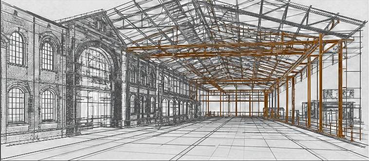
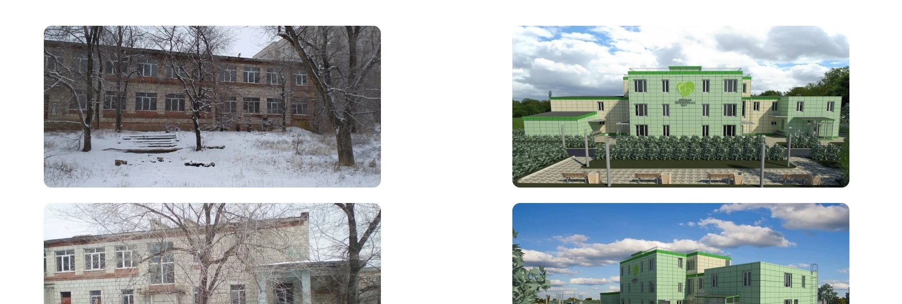

Определённый объём ремонта
Заказчик понимает, что именно обновляется и какие ограничения учитываются.

Обновляем помещения и конструктивные элементы с учётом реального состояния объекта. Сначала определяем состав ремонта и ограничения, затем организуем работы так, чтобы заказчик видел объём и последовательность.
Ремонт восстанавливает или обновляет существующие элементы без изменения основной схемы объекта. Если меняется назначение, объём или конструктивная логика, потребуется отдельное проектное решение. Мы начинаем с обследования и помогаем отделить текущий ремонт от задач, которые нельзя безопасно решить только отделочными работами.

На работающем объекте заранее выделяем зоны, окна доступа и временные ограничения. Материалы и шумные операции планируем по очередям, инженерные отключения согласуем до выхода бригады. Так ремонт остаётся управляемым для сотрудников и посетителей, а не превращается в постоянный аварийный режим.

По завершении каждой очереди проверяем фактический объём, качество и закрывающие документы. Замечания не переносятся на финальную дату: их фиксируем и закрываем по ходу работ. Заказчик принимает обновлённые помещения по понятному перечню, а не по общему впечатлению.
Ремонт обновляет или восстанавливает существующие элементы. Реконструкция меняет параметры, назначение или конструктивную схему и обычно требует отдельного проектного маршрута.
Зависит от состава и места работ. Для сложных участков и вмешательства в инженерные системы проектная часть помогает определить решение, объём и порядок выполнения.
Да. Работы разбиваются на очереди, согласуются доступ и временные ограничения, а зоны ремонта отделяются от работающих помещений.
Сначала фиксируем состояние и приоритеты, затем определяем очереди, материалы и точки приёмки. Каждая очередь закрывается проверкой до перехода к следующей.
Состав зависит от работ. Это могут быть акты, паспорта материалов и оборудования, исполнительные схемы и перечень выполненных изменений.
От состояния объекта, площади, состава работ, материалов и ограничений действующей эксплуатации. Расчёт уточняется после обследования.
Заказчик понимает, что именно обновляется и какие ограничения учитываются.
Ремонт не останавливает работу объекта целиком и проходит по согласованной последовательности.
Каждая очередь принимается по фактическому результату и перечню замечаний.

Обновлённый объект передан заказчику с необходимыми материалами и документами.
Организуем работу проектировщиков и подрядчиков, следим за сроками, качеством и документами. Вы в любой момент понимаете, что происходит на объекте и что нужно для следующего этапа.